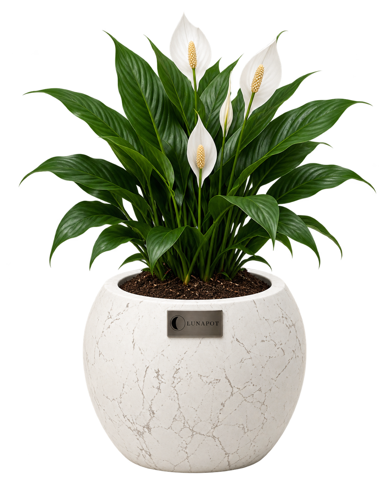
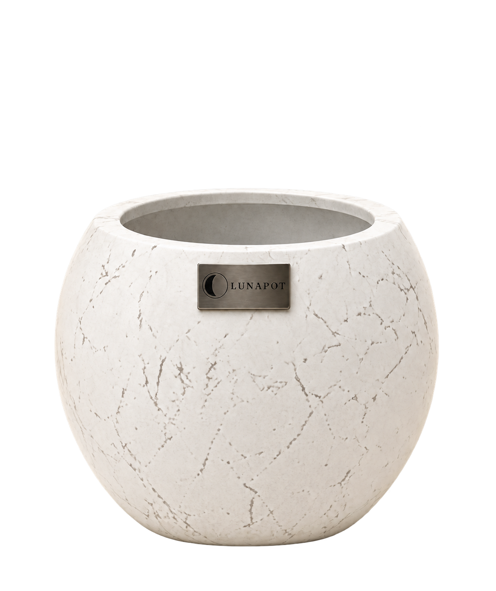

YUMUŞAK & YUVARLAK
Formuna bak.
İçini de keşfet.
Nova’nın yuvarlak hatları, Luna’nın ince silüeti. Dışarıda farklı bir karakter; içeride düşünülmüş bir yapı.
İKİ FORM. SENİN BAKIŞIN.Yan yana bak.
Yan yana bak.
İçine sineni seç.
Rengi değiştir, bitkili hâlini gör.
Hangi form senin köşene daha çok yakışıyor?
YALIN & İNCE
Beyaz mermer · Bitkili görünüm
Bitki, görsel sunumun parçasıdır. Paket içeriği ve kesin ölçüler ürün seçeneğine göre kontrol edilmelidir.
SEÇMEDEN ÖNCE
Üç küçük kontrol.
- 01Ayırdığın alan
Saksının duracağı yerin genişliğini ve yüksekliğini ölç.
- 02Mevcut bitkin
Bitkinin mevcut saksı ölçüsünü ve kök alanını not et.
- 03Paketin içeriği
Bitki, toprak ve iç platformun seçtiğin pakete dahil olup olmadığını kontrol et.
İKİ AYRI DETAY.
Katman katman Lunapot.
Bitkinin iç yerleşimi ve saksının gövdesi: her birini kendi anlatımında yakından keşfet.

01 / BİTKİNİN İÇ DÜZENİ
Bitki yerleşim sistemi
Kök, torf ve iç drenaj platformunun saksıdaki yerini keşfet. Parçaları adım adım birleştir.
Yerleşimi keşfet ↗
02 / SAKSININ MALZEMESİ
Gövde katmanları
Fiberglass yapıdan mermer efektine, saksının gövdesini oluşturan dört katmanı yakından incele.
Katmanları keşfet ↗Kendi formunu bul.
Artık yapısını biliyorsun. Mağazada seçenekleri ve fiyatları birlikte incele.
Saksı mağazasına geç ↗